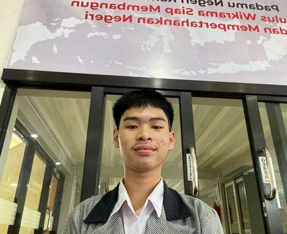

Siswa SMK Wikrama Bogor yang membangun fondasi di infrastruktur jaringan, cloud, dan keamanan siber — disiplin, cepat belajar, dan terbiasa bekerja dalam tim.

Seorang siswa jurusan Teknik Jaringan Komputer dan Telekomunikasi di SMK Wikrama Bogor. Saya individu yang disiplin, mudah belajar, dan memiliki kepribadian yang mudah beradaptasi dengan tim.
Saya sangat termotivasi untuk mempelajari infrastruktur jaringan, teknologi cloud, dan keamanan siber, dan akan terus mengembangkan diri untuk menjadi profesional IT yang kompeten dan adaptif.
Memiliki pengalaman dalam konfigurasi jaringan dengan MikroTik, administrasi server berbasis Linux, hingga penerapan layanan cloud di AWS & GCP. Selain itu, saya juga terbiasa melakukan pengujian celah keamanan serta penanganan insiden siber.
Konfigurasi dan pengelolaan jaringan menggunakan MikroTik.
Mengelola sistem berbasis Linux untuk kebutuhan server dan layanan.
Penerapan dan pengelolaan layanan cloud di AWS dan Google Cloud Platform.
Pengujian celah keamanan, penanganan insiden siber, dan pemantauan log sistem.
Berperan dalam organisasi yang merencanakan, mengoordinasikan, dan melaksanakan program kerja serta kegiatan sekolah untuk mengembangkan potensi, kepemimpinan, dan kreativitas peserta didik. Sebagai MPR, menjadi wadah aspirasi warga rayon, menjembatani komunikasi antara peserta didik dan pihak sekolah, mengawal pelaksanaan program kerja, serta menciptakan lingkungan rayon yang tertib dan kondusif.
Membina, membimbing, mengarahkan, serta mengawasi seluruh kegiatan kepramukaan agar berjalan tertib, aman, dan sesuai dengan tujuan pendidikan karakter.
Mengikuti kegiatan FJOB (Forum OSIS Jawa Barat) sebagai bagian dari tim media "Warkop Hilang Arah".
Menempuh pendidikan kejuruan dengan fokus pada jaringan komputer dan telekomunikasi.
Menyelesaikan pendidikan menengah pertama di lingkungan pesantren terpadu.
Terbuka untuk peluang magang, kolaborasi, maupun sekadar berdiskusi seputar jaringan, cloud, dan keamanan siber.